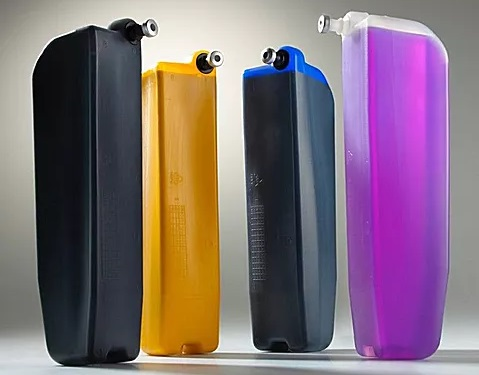
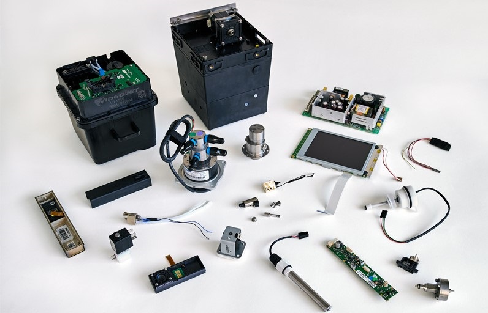

Servicio Tecnico de Codificadores Markem-Image, Domino, VideoJet y Zanasi
¿Su codificador presenta alguno de los siguientes problemas?
- Impresión borrosa o poco legible.
- Desbordes de tinta en el cabezal.
- Problemas de presión en el circuito de tinta.
- Ha dejado de imprimir.
Estas fallas ocurren principalmente por la falta de mantenimiento periódico de los codificadores y en menor medida, por el uso normal y consecuente desgaste de las piezas de los equipos.
Ellas traen como consecuencia que se atrasen las líneas de producción y en el peor de los casos, que se detengan completamente.
Y una línea de producción detenida puede significar desde una simple demora en los tiempos de elaboración hasta grandes pérdidas para la empresa.
Por ello, en MTM ofrecemos programas de mantenimiento enfocados en mantener los codificadores operativos en todo momento y maximizar la vida útil de las piezas del equipo.
Nuestros planes de mantenimiento incluyen:
- Mantenimiento general con cambios de filtros de tinta y aire.
- Al menos cuatro (4) visitas de cortesía para evaluar el funcionamiento de los equipos.
- Asesoría técnica vía telefónica disponible las 24 horas.
- Un (1) curso de capacitación para el personal operario de los equipos.
- Tiempo de respuesta menor a 24 horas cuando es necesaria una intervención del equipo.
Solicite nuestros planes llenando el formulario de contacto -clic aquí- o escribiéndonos directamente al WhatsApp haciendo clic aquí o sobre el icono de la aplicación.
Algunas de las empresas que nos prefieren:
Garantía de servicio:
En MTM tenemos más de 10 años de experiencia en el sector y nuestro personal técnico es entrenado por la casa matriz Markem-Imaje, Domino, Videojet y Zanasi.
Sabemos que una vez que cualquier falla es corregida correctamente, la misma no se vuelve a presentar en el corto plazo.
Por ello, desde MTM garantizamos la correcta reparación de cualquier falla que se presente.
De igual forma, si se requiere un cambio de pieza, cada componente a instalar cuenta con su garantía natural que será notificada antes de la instalación.
Contacto
Ponerse en contacto con nosotros es muy sencillo, solo tiene que llenar los campos del formulario con los datos solicitados y especificar su requerimiento en el mensaje.
Una vez presiona el botón enviar, recibirá en la dirección de correo indicada por usted un mensaje de confirmación con los datos registrados en el formulario. Seguidamente, nos pondremos en contacto por los canales solicitados: teléfono y correo.
De igual forma, puede establecer una conversación con nosotros directamente vía WhatsApp haciendo clic en el ícono de la aplicación.
Su mensaje se ha envíado correctamente, en breve nos pondremos en contacto.
Sobre Nosotros
Somos una empresa dedicada exclusivamente a brindar soluciones integrales en codificación, trazabilidad y marcaje de datos variables sobre cualquier tipo de productos y superficies.
Tenemos más de 10 años de experiencia en el mercado venezolano realizando servicios que abarcan instalación y calibración de codificadores, revisiones técnicas correctivas y preventivas, venta e instalación de piezas, formación de personal para el correcto uso de los equipos y del personal técnico para su reparación.
Nuestros profesionales, además de contar con una amplia experiencia en el área de codificación y marcaje de productos, han sido entrenados y certificados por la misma casa matriz Markem-Imaje, Videojet, Domino y Zanasi para la intervención de todos los productos que comercializan.
Mantenemos las mejores alianzas estratégicas con proveedores nacionales e internacionales. Dichas alianzas nos permiten ofrecer a nuestros clientes soluciones ajustadas a sus requerimientos y que satisfagan completamente sus necesidades.
Agregamos valor a nuestros clientes optimizando los procesos de marcaje siguiendo las nuevas tendencias y las alternativas más eficientes lo que finalmente impacta de manera positiva la productividad.
Póngase en contacto con nosotros llenando el formulario de contacto haciendo clic aquí o vía WhatsApp presionando el ícono de la aplicación.
Codificadores Markem-Imaje
Los codificadores Markem-Imaje están especialmente diseñados para aplicaciones en ambientes de producción exigentes.
Imprimen desde caracteres estándar y códigos de barras, hasta impresiones más específicas con fuerte contraste o de calidad superior en blanco y negro o color.
Pueden marcar cartón, vidrio, metal, plástico e incluso imprimir directamente sobre los alimentos gracias a que disponen de consumibles a base de alcohol o agua, sin acetona ni MEK.
Ideales para la industria alimentaria y agroalimentaria, belleza e higiene, químicos y farmacéuticos, bebidas, tubos y perfiles, materiales eléctricos y electrónico, entre otros.
Si desea adquirir o alquilar uno de los equipos de esta marca, repuestos o consumibles, puede solicitar una cotización con nosotros llenando el formulario de contacto -clic aquí- o escribiéndonos directamente haciendo clic en el icono de WhatsApp.
Codificadores Domino
Los codificadores Domino cuentan con tecnología que controla la generación de cada gota de tinta que sale del cabezal, ofreciendo la más alta precisión en cada impresión.
Poseen un sencillo sistema de mantenimiento, pudiendo incluso cambiar el modulo en menos de 10 minutos y con cartuchos y consumibles de fácil reposición que eliminar el riesgo de derrames.
La interfaz de usuario QuickStep, desarrollada por Domino para sus equipos, convierte a estos codificadores en uno de los amigables para los operarios en las líneas de producción.
Conocidos por su bajo costo de adquisición y mantenimiento, son la elección perfecta si desea ahorrar dinero a la vez que disfruta de un equipo sencillo, flexible y totalmente confiable.
Si desea adquirir o alquilar uno de los equipos de esta marca, repuestos o consumibles, puede solicitar una cotización con nosotros llenando el formulario de contacto -clic aquí- o escribiéndonos directamente haciendo clic en el icono de WhatsApp.
Codificadores Videojet
Los ambientes de producción a gran escala requieren que los codificadores y consumibles (tintas y solventes) estén a la altura de la velocidad de las distintas líneas de producción.
Por ello, Videojet pone a disposición una variedad de codificadores industriales de tinta continua de secado rápido que permiten que el proceso de producción sea constante.
La interfaz de estos equipos está inspirada en el funcionamiento sencillo de una Tablet para facilitar su uso y reducir el número de pasos que debe ejecutar el operador al inicializarla.
Además de contar con herramientas de productividad y de garantía de codificación, los equipos de Videojet permiten disfrutar de 5 años de funcionamiento entre sustituciones previstas de las piezas de desgaste.
Si desea adquirir o alquilar uno de los equipos de esta marca, repuestos o consumibles, puede solicitar una cotización con nosotros llenando el formulario de contacto -clic aquí- o escribiéndonos directamente haciendo clic en el icono de WhatsApp.
Codificadores Zanasi
Las impresoras industriales Zanasi son los codificadores apropiados para las empresas más exigentes que quieran un equipo barato pero que esté equipado con lo más avanzado en tecnología de codificación.
Todos los equipos están construidos con una carcasa de acero inoxidable 304 convirtiendo a estos codificadores en herramientas de trabajo realmente robustas integrables en cualquier ambiente de trabajo.
Pensando en economizar todo lo posible la codificación y trazabilidad de los productos, los equipos Zanasi incluyen la función de limpieza automática del cabezal al iniciar y al parar.
Gracias a esto, Zanasi asegura unos costos de mantenimiento mínimos manteniendo la calidad de la impresión de textos y códigos de barras sobre cualquier superficie.
Si desea adquirir o alquilar uno de los equipos de esta marca, repuestos o consumibles, puede solicitar una cotización con nosotros llenando el formulario de contacto -clic aquí- o escribiéndonos directamente haciendo clic en el icono de WhatsApp.
Consumibles
Ponemos a disposición de nuestros clientes tintas y solventes originales Markem-Imaje, Domino, Videojet y Zanasi, así como genéricos de la mejor calidad disponible en el mercado para asegurar el mayor rendimiento posible y el máximo tiempo de funcionamiento ya que, en comparación con otras marcas, su tiempo de mantenimiento y sustitución son menores.
Además de las tintas de aplicación general, también contamos con las siguientes:
- Anti falsificación.
- A base de agua y alcohol.
- Alimentarias: cumplen con las normas EEC.
- Lavables: ideales para botellas retornables.
- Pigmentadas: especiales para aplicaciones que requieren gran contraste.
- Termo cromáticas: el color cambia indicando fluctuaciones de temperatura.
Ribbons:
- Resistentes a agua y solventes.
- Para cabezales flat o near edge.
- De cera/resinas especiales para imprimir en envases flexibles.
Para adquirir consumibles con nosotros llene el formulario de contacto haciendo clic aquí o póngase en contacto con nosotros directamente vía WhatsApp presionando el ícono de la aplicación.

Repuestos
Contenido de la información de repuestos, contenido de la información de repuestos, contenido de la información de repuestos contenido de la información de repuestos contenido de la información de repuestos.
Contenido de la información de repuestos, contenido de la información de repuestos, contenido de la información de repuestos contenido de la información de repuestos contenido de la información de repuestos.
Contenido de la información de repuestos, contenido de la información de repuestos, contenido de la información de repuestos contenido de la información de repuestos contenido de la información de repuestos.
Contenido de la información de repuestos, contenido de la información de repuestos, contenido de la información de repuestos contenido de la información de repuestos contenido de la información de repuestos.clic aquí
